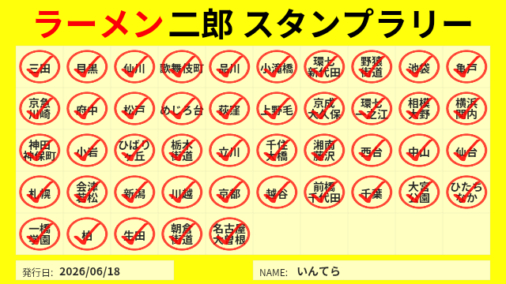

04 / JIRO
ラーメン二郎
VISIT LOG / STAMP RALLY
好きな一杯と、
店舗を巡った記録。
二郎を巡る。
ラーメン二郎も趣味のひとつです。全国の店舗を巡った記録と、食べた一杯を残しています。


沖縄店の開店前に、全国のラーメン二郎を訪問し全国制覇を達成しました。
04 / JIRO
好きな一杯と、
店舗を巡った記録。
ラーメン二郎も趣味のひとつです。全国の店舗を巡った記録と、食べた一杯を残しています。

沖縄店の開店前に、全国のラーメン二郎を訪問し全国制覇を達成しました。